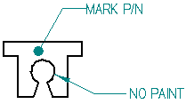
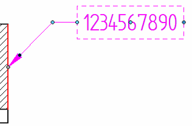
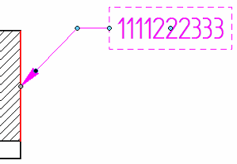
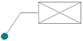

Callout command
The Callout command  places a callout. Before you place the callout, you can use the Callout Properties dialog box to define the callout text and special characters, such as diameter and
depth symbols.
places a callout. Before you place the callout, you can use the Callout Properties dialog box to define the callout text and special characters, such as diameter and
depth symbols.
You can:
-
Type plain text.
-
Select property text, which is associative to the model.
-
Add property text format codes to modify the value returned by the property text.

Formatting callouts
You can use the options on the Callout command bar and in the Callout Properties dialog box to:
-
Change the appearance of the callout text.
-
Display a border around the callout text.
-
Specify a fixed width or adjustable width callout box.
See the help topic, Formatting callout text and border.
Manipulating callouts
After you place a callout, you can use the annotation edit handles to edit it.
- Handles for a fixed width callout
-

- Handles for a variable width callout
-

See the help topic, Manipulating callouts.
Locating empty callouts
Empty callouts are marked by a unique symbol. This makes it possible to locate and select a callout without content—a null callout—even when the callout does not contain a leader line. The empty callout symbol looks like this:

The empty callout symbol does not print. If a leader is attached, however, the leader is printed.

-
You can control whether the empty callout symbol is displayed using the option, Show empty callouts and text boxes, on the General tab in the Solid Edge Options dialog box.
-
In the Draft environment, the default symbol color is derived from the Disabled element color on the Colors page (Solid Edge Options dialog box). For PMI callouts in the modeling environments, the default color is derived from the Sketch color.
How do I
Place a calloutPlace a hole callout
Place a feature callout
Customize a feature callout
Define smart feature properties in the Dimension style
Learn more
Formatting callout text and borderManipulating callouts
Look up more details
Callout command barCallout Properties dialog box
General tab (Callout Properties dialog box)
Text and Leader tab
Feature Callout tab
Border tab (Callout Properties dialog box)
Quick links
Place a feature callout dimensionBasic reference and property text rules
Format codes to modify reference and property text output